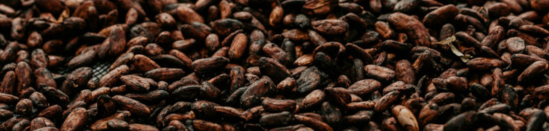

O chocolate é uma das delícias mais amadas em todo o mundo. Originário das Américas, o chocolate é feito a partir dos grãos de cacau, que são fermentados, torrados e moídos. Existem vários tipos de chocolates, cada um com suas próprias características únicas.

Tragetória
O chocolate é um alimento que tem uma trajetória fascinante. Os primeiros registros de consumo regular de chocolate datam por volta de 1500 a.C. e estão associados à civilização Olmeca, que habitava as regiões atuais do México e da Guatemala. Mais tarde, os Maias e os Astecas também adotaram o costume de beber chocolate, considerando-o sagrado.
Esses povos preparavam o chocolate de forma diferente do que conhecemos hoje. As sementes de cacau eram torradas e misturadas com especiarias, pimenta e uma base de milho fermentado, resultando em uma bebida com sabor distinto.
Chegada do chocolate à Europa
Ocorreu através do comércio realizado pelos conquistadores espanhóis que o chocolate chegou à Europa. Inicialmente, era considerado um alimento especial, consumido apenas por mulheres, sacerdotes e nobres em rituais da Igreja Católica.
Por volta de 1700, as “Casas de Chocolate” começaram a competir com as “Casas de Café” em Londres, e o chocolate gradualmente se popularizou.
Primeira barra de chocolate
Em 1847, a Fry Company, uma fábrica na Ingraterra, criou a primeira barra do mundo. Essa barra combinava cacau moído com manteiga de cacau e açúcar, marcando o início da forma como conhecemos o chocolate hoje.
Suíça e o chocolate como o conhecemos
Finalmente, na Suíça, a mistura consagrada de chocolate, leite e açúcar foi desenvolvida, dando origem ao chocolate ao leite que apreciamos atualmente.
A jornada do chocolate envolveu culturas antigas, explorações, comércio e inovações culinárias. Hoje, ele é uma verdadeira paixão global, e não podemos imaginar nossas vidas sem esses pedacinhos de felicidade!